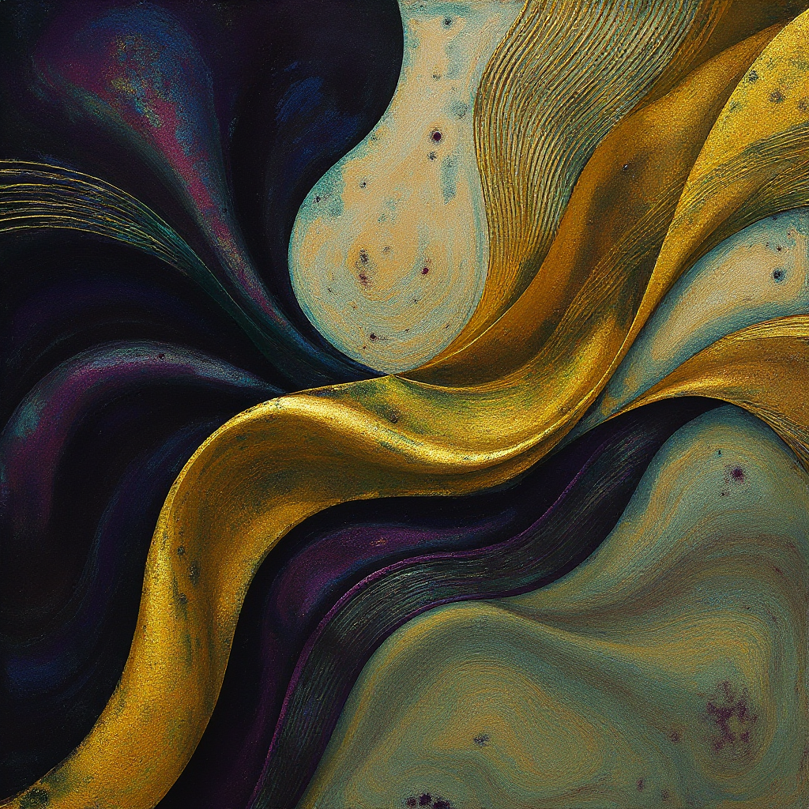

Нажмите на пластинку, чтобы послушать
← прокручивайте →

Оркестровая тема для короткометражного фильма. Записана с использованием живых струнных и синтезаторных текстур. Настроение — напряжение, ожидание, тревога.
Электронный эмбиент-трек для документального проекта. Слои полевых записей, гранулярный синтез и пространственная обработка. Тема — одиночество в большом городе.
Гибридный саундтрек — пианино, электроника и перкуссия. Написан как главная тема для инди-игры. Вдохновлено скандинавскими пейзажами и минимализмом.